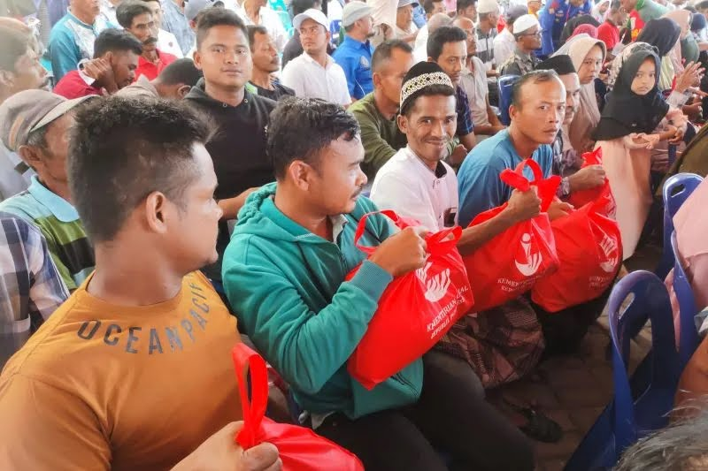
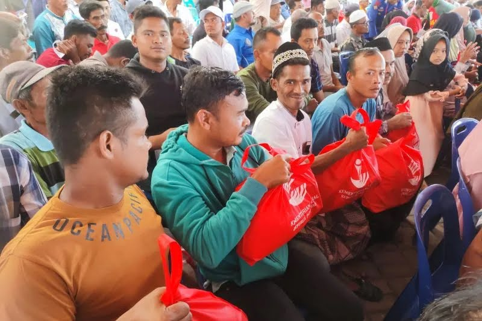

✶ Sumber Daya Alam
Indonesia memiliki sumber daya alam yang melimpah, seperti pertanian, perikanan, kehutanan, dan lain-lain. Melalui sumber daya alam itulah, dapat dimanfaatkan untuk menciptakan peluang kerja dan meningkatnya pendapatan masyarakat. Dengan memanfaatkan sumber daya alam secara produktif, masyarakat yang berkekurangan dapat mengembangkna usahah atau berbisnis. Pendapatan ini tidak hanya membantu mereka dalam memenuhi kebutuhan sehari-harinya, tetapi memberikan mereka peluang juga untuk meningkatkan kualitas hidup mereka. Selain itu, pengelolaan sumber daya alam yang baik dapat membuka peluang kerja baru dan mendukung pertumbuhan ekonomi daerah.
✶ Sumber Daya Manusia
Indonesia menduduki peringkat ke-4 dalam negara yang memiliki jumlah penduduk terbesar di dunia. Hal ini menjadi salah satu potensi utama dalam upaya peningkatan sumber daya manusia. Melalui peningkatan kualitas pendidikan dan pelatihan keterampilan. Masyarakat dapat menjadi lebih terlatih dan siap dalam menghadapi tantangan pasar kerja di era modern. Dengan mempunyai keterampilan yang baik, tidak hanya memiliki peluang yang besar untuk mendapatkan pekerjaan yang bagus tetapi juga penghasilan yang besar. Tetapi juga, dengan peningkatan kualitas sumber daya manusia ini, mereka dapat mampu membuka usaha secara mandiri dan kreatif untuk memulai usaha dalam upaya meningkatkan kualitas hidupnya.
✶ Inovasi Teknologi
Perkembangan inovasi teknologi menjadi salah satu pelung penting bagi mengurangi angka kemiskinan. Dengan teknologi digital dan e-commerce, membuka akses pasar kerja yang lebih luas bagi masyarakat, termasuk mereka yang tinggal di daerah terpencil. Melalui teknologi ini, para pengusaha kecil dapat mempromosikan produk mereka ke konsumen lebih luas melalui teknologi yang canggih. Selain itu, dengan penggunaan teknologi dapat memudahkan masyarakat dapat mengakses informasi, mengelola usaha secara efisien dan layanan keuangan digital. Inovasi teknologi ini, juga dapat membantu masyarakat dalam pendidikan dan pelatihan secara online. Sehingga, masyarakat dapat memperoleh ilmu dan pengetahuan baru tanpa terbatasi oleh lokasi.
✶ Kebijakan Pemerintah
Pemerintah Indonesia, memiliki beberapa program yang dapat membantu masyarakat kekurangan. Program-program tersebut seperti, program Keluarga harapan (PKH), Bantuan Pangan Non-Tunai (BPNT), dan Bantuan langsung Tunai (BLT). Kebijakan pemerintah dalam pembangunan infrastruktur, akses pendidikan, serta layanan kesehatan yang merata dapat membuka peluang bagi masyarakat untuk meningkatkan kualitas hidupnya dengan dapat memanfaatkan akses dari pemerintah. Dengan kebijakan yang tepat dan teratur, masyarakat dapat mulai belajar dan mandiri, tidak bergantung pada bantuan, perlahan-lahan meningkatkan kualitas hidupnya menjadi lebih baik lalu keluar dari kemiskinan.